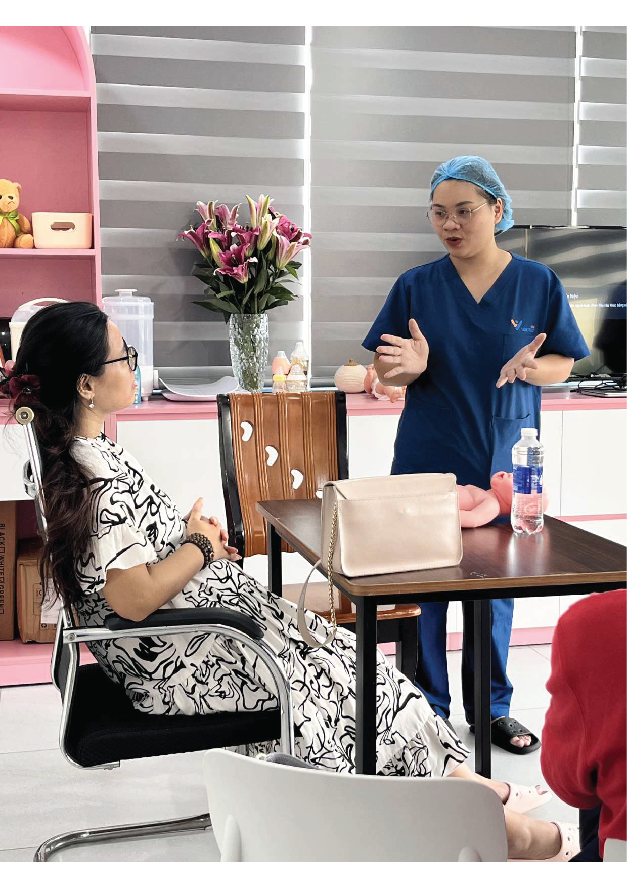
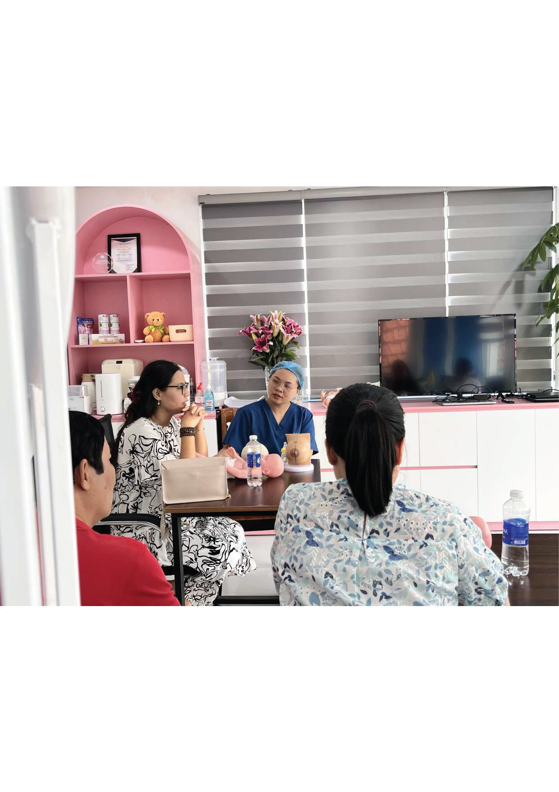
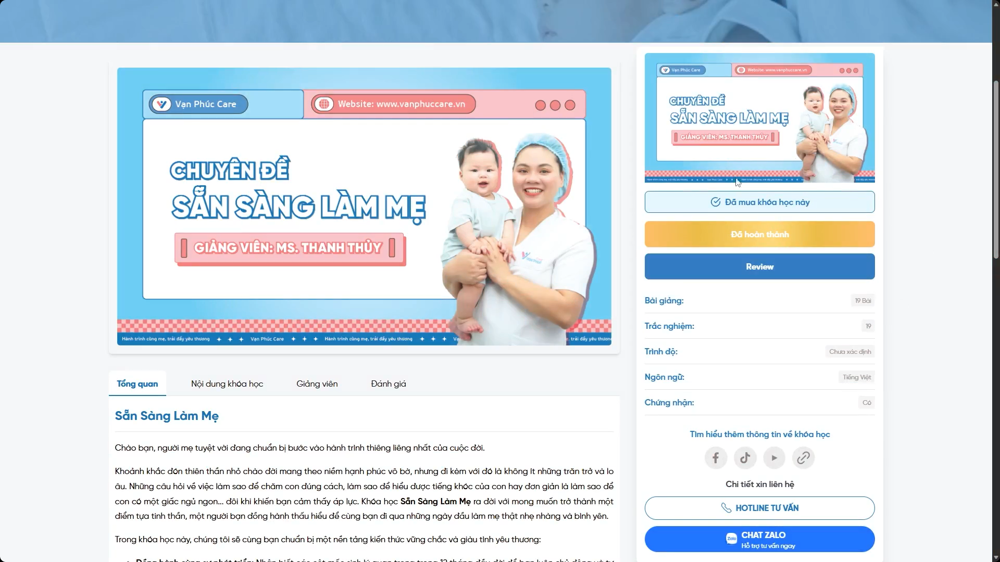

Chuyên môn vững vàng
Đồng hành cùng điều dưỡng trưởng Thanh Thủy và đội ngũ giàu kinh nghiệm
Chuẩn bị vững vàng cho hành trình làm cha mẹ. Với sự đồng hành cùng điều dưỡng trưởng Thanh Thuỷ, cùng cha mẹ biến kiến thức y khoa thành kỹ năng chăm con thực tế, thấu hiểu nhu cầu của con trẻ bằng tình yêu thương.

01 buổi · 03 giờ (Offline)
Tối đa 05 cặp bố mẹ/ dưới 10 người
9h00 – 12h00 (Sáng thứ 7 hàng tuần)
Trung tâm ở cữ - Vạn Phúc Care

Ngày con chào đời là khởi đầu của một hành trình thiêng liêng. Bên cạnh tình yêu thương, cha mẹ còn cần những kiến thức đúng và kỹ năng thực tế để tự tin chăm sóc con yêu.
Lớp học tiền sản tại trung tâm ở cữ Vạn Phúc Care được hình thành với sứ mệnh giúp cha mẹ thực sự thấu hiểu nhu cầu của trẻ, biết khi nào cần can thiệp, khi nào nên kiên nhẫn — và cùng nhau chuẩn bị cho những ngày đầu đón bé.
Đồng hành cùng điều dưỡng trưởng Thanh Thủy và đội ngũ giàu kinh nghiệm
Trực tiếp thực hành trên mô hình búp bê y tế, đồng thời được hướng dẫn sát sao 1:1
Bố tự tin chăm sóc con và san sẻ cùng mẹ ngay từ những ngày đầu sau sinh
Kiến thức khoa học được chuyển thành những kỹ năng gần gũi và thực tế
Bố mẹ cùng học, cùng thực hành — với sự hướng dẫn trực tiếp của điều dưỡng.

Để lại thông tin để được tư vấn buổi học phù hợp với gia đình.
Giai đoạn sức khỏe mẹ đã ổn định, thuận tiện để học và thực hành các kỹ thuật
Còn nhiều bỡ ngỡ, muốn được hướng dẫn từng bước dễ tự tin khi con chào đời.
Mẹ sinh bé thứ 2 hoặc 3, muốn cập nhật thêm kiến thức và kỹ năng chăm sóc bản thân và trẻ sơ sinh theo phương pháp hiện đại.
Mong muốn lắng nghe những chia sẻ về tiền sản giật, dinh dưỡng thai kỳ và nuôi con bằng sữa mẹ.
Tự tin nhận biết nhu cầu của bé, biết khi nào cần can thiệp và khi nào nên kiên nhẫn.
Bố tự tin, có khả năng trực tiếp thực hành các thao tác chăm sóc trẻ sơ sinh, san sẻ cùng mẹ ngay từ những ngày đầu.
Tài liệu chuyên môn hoặc khóa học trực tuyến. Tổng hợp lại kiến thức giúp cha mẹ nhớ lâu, dễ dàng thực hành
Cha mẹ được chủ động đặt câu hỏi, giải đáp từng băn khoăn riêng và tháo gỡ các thói quen chăm con thiếu khoa học.
Từ chăm sóc thai kỳ đến những thao tác chăm bé đầu tiên.
Lý thuyết tinh gọn kết hợp thực hành; đan xen các phiên Q&A cá nhân hóa 1:1, thực hành trực tiếp, giải đáp đến từng băn khoăn.
Nhận biết dấu hiệu và phòng ngừa tiền sản giật trong những tháng cuối thai kỳ
Dinh dưỡng khoa học cuối thai kỳ và phục hồi thể trạng sau sinh
Thực hành kỹ thuật thở và rặn sinh thường hiệu quả, giúp mẹ chủ động khi vượt cạn.
Hiểu cơ chế nuôi con bằng sữa mẹ và chuẩn bị nền tảng cho hành trình đầu đời của bé.
Nhận biết tín hiệu đói, hướng dẫn cữ ăn đúng và đủ trong những ngày đầu sau sinh.
Hướng dẫn và chỉnh sửa trực tiếp khớp ngậm khi bé ti mẹ cùng đội ngũ điều dưỡng.
Thực hành kỹ thuật xử lý cấp cứu sặc sữa khẩn cấp trên mô hình búp bê y tế.
Thực hành vỗ ợ hơi đa tư thế và quấn chũn giúp bé an tâm, ngủ sâu giấc. Kết thúc bằng hỏi đáp, gỡ các thói quen chăm con thiếu khoa học.
Đan xen các phiên hỏi đáp cá nhân hóa cùng điều dưỡng, ngay tại lớp
Đăng ký ngayĐiều dưỡng trưởng Thanh Thủy trực tiếp thiết kế và giảng dạy chương trình, đưa những kiến thức y khoa trở nên gần gũi, dễ hiểu — để mỗi bố mẹ đều có thể tự tin áp dụng khi con chào đời.
Một buổi học dành riêng cho bố mẹ, với không gian gần gũi và sự đồng hành tận tâm từ đội ngũ điều dưỡng.
Lớp học rất khuyến khích cả bố và mẹ cùng tham gia, hoặc người thân trực tiếp hỗ trợ chăm bé sau sinh. Cha mẹ tham gia cùng nhau không phát sinh thêm phụ phí.
Trung tâm ở cữ đã trang bị đầy đủ mô hình búp bê y tế, giáo cụ thực hành, tài liệu giáo trình, bàn trà. Mẹ bầu và gia đình chỉ cần mặc trang phục thoải mái, mang theo tâm lý cởi mở để thực hành.
Giai đoạn lý tưởng nhất là từ tuần thứ 20 đến tuần thứ 34 của thai kỳ. Lúc này sức khỏe của mẹ đã ổn định, bụng chưa quá nặng nề, giúp mẹ và bố tiếp thu và thực hành các kỹ thuật thở, rặn sinh và chăm sóc bé một cách thoải mái nhất.
Lớp học diễn ra định kỳ vào buổi sáng Thứ 7 hàng tuần (từ 9:00 đến 12:00) tại Tầng 1 Trung tâm ở cữ Vạn Phúc Care. Để đảm bảo chất lượng học tập, mỗi lớp chỉ nhận số lượng học viên dưới 10 người.
Sau buổi học, gia đình được tặng tài liệu tóm tắt mang về và tiếp tục được đội ngũ điều dưỡng của Vạn Phúc Care đồng hành giải đáp thắc mắc. Khi sinh bé xong, nếu gia đình cần hỗ trợ trực tiếp, đội ngũ có các dịch vụ chăm sóc hậu sản chuyên sâu tại trung tâm ở cữ hoặc tại nhà.